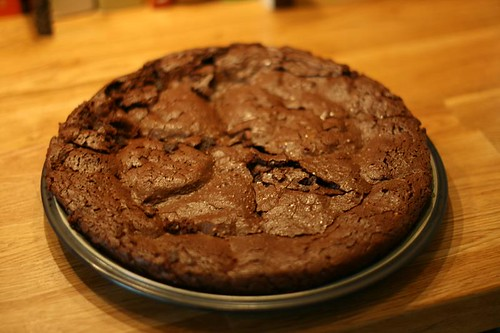
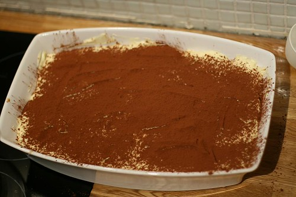

Blåbærpai. Oppskrift på en veldig god dessert.
Dessert/kake/søtsaker

Oppskrift på sunn pizza med tykk bunn! Nam!!!
Middag

Eplepai og epleterte. Hvordan lager du den? Her er en nydelig oppskrift.
Dessert/kake/søtsaker

Sjokolade cookies (sjokoladekjeks) (Chocolate cookies). En fantastisk oppskrift!
Dessert/kake/søtsaker

Hjemmelagd hamburger eller cheeseburger. Selv Brede mente at dette var en av de beste burgerne han hadde smakt, og han har bodd i USA i 5 år!
Middag

Deep Pan Pizza. Pizza på chicago-vis. Her er en oppskrift.
Middag

Verdens beste spaghettisaus / pastasaus / tomatsaus. Veldig veldig god oppskrift!
Middag

Sitronglaserte Blåbærmuffins, oppskrift som er enkel å følge
Dessert/kake/søtsaker

Karamellpudding med et hint av kaffe (Christers beste)
Dessert/kake/søtsaker

Hjemmelagde pølser smaker bedre enn kjøpte (her er en oppskrift)
Middag

Slik lager du hjemmelagd pasta/ravioli (oppskrift)
Frokost

Slik kan det gå… (hvis du ikke følger oppskriften)
Om mat

Sjokoladekake for voksne (oppskrift)
Dessert/kake/søtsaker

Tiramisu-oppskrift for dummies! Veldig enkel, veldig god!
Dessert/kake/søtsaker